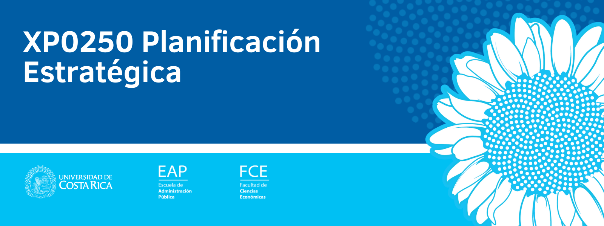

Caso Dos Pinos
Explore VME, escenarios, árboles de decisión, inversiones, flujos y umbrales de sensibilidad.
Abrir simulador
Simuladores y herramientas didácticas para explorar decisiones, escenarios, probabilidades, trade-offs y sensibilidad.
Este laboratorio complementa las actividades del curso con simuladores interactivos. Modifique supuestos, compare alternativas y observe cómo cambia la recomendación estratégica.
Explore VME, escenarios, árboles de decisión, inversiones, flujos y umbrales de sensibilidad.
Abrir simuladorEste espacio irá incorporando nuevas herramientas y casos del curso XP0250.